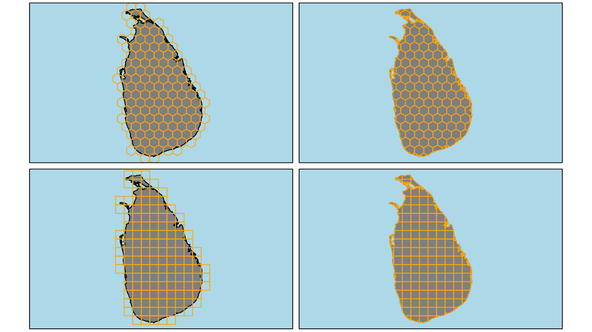
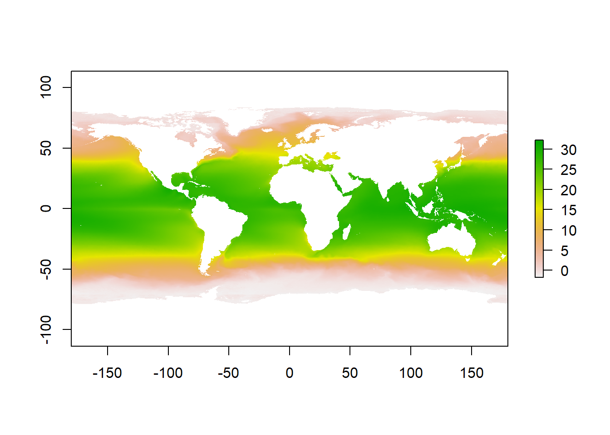

Show the code
install.packages(c("terra", "raster"))
library(raster)
library(terra)In this lab, you will be introduced to:
sdmpredictors package,Raster data is any pixelated (or gridded) data where each pixel is associated with a specific geographical location. The value of a pixel can be continuous (e.g. elevation) or categorical (e.g. land use). If this sounds familiar, it is because this data structure is very common: it’s how we represent any digital image. There are three possible grid types in which raster files can be defined, of which squared grid is used most often.

Squared grid has several advantages over the other types of grids, such as:

Resolution or scale is a property of raster, that defines the size of the grid cells. At lower resolutions, cells are bigger and precision of the raster is lower. At higher resolutions the cells are smaller and the precision is higher. The choice of resolution depends on the size of the area of our research (global, regional, local), species or phenomenon in question (large scale migrations vs. endemic, restricted species) and availability of data. The common grid sizes available today go from 5 arc minutes (~ 10 x 10 km)(i.e. worldclim) to 30x30 meters (landsat).

Spatial tools in R rarely use tabular data and for this purpose, there are several packages (extensions of basic R) that contain the appropriate functions for dealing with spatial data structures. The most commonly used for raster data are:
raster andterra.The raster package is one of the oldest spatial tools in R, which defines different forms of data structures in R: RasterLayer, Raster Stack and Raster Brick and enables the import, editing and analysis of raster data. The raster package is slowly being phased out and will be completely replaced by the terra package.
The terra package is an updated, simplified and above all faster version of the raster and sp packages. terra enables easier import, editing and analysis of both vector and raster data.
Functions for creating and/or importing raster data and raster object types are:
raster() for rasterLayer: single-layer raster datatype that stores values in a single layer. A RasterLayer is used to store data that has a single aspect, such as elevation data or terrain surface data.stack() for rasterStack: a multi-layer raster data type that stores values in multiple layers. RasterStack is used to store data that has multiple aspects, such as data on multiple types of climate variables or data on multiple types of surface features.brick() for rasterBrick: A multi-layer raster datatype is similar to RasterStack, but most commonly used to store large raster layers from raster files on the computer.rast() for SpatRaster (terra): umbrella function and data type in the terra package, which includes all the above data types from the raster package.Open an empty R script from the File dropdown menu by clicking New file \ R script. Save the script to the Desktop of your computer and name it Global marine data with R.
Copy and paste below code to the R script, move cursor to the first row with code and click Run. Move cursor to each row that contains code and repeat.
install.packages(c("terra", "raster"))
library(raster)
library(terra)Reminders from the previous days:
install.packages() functions? Why?library() function? Why?sdmpredictorssdmpredictors is a package in R that contains global terrestrial and marine environmental data obtained by various methods and from various sources. The data are mostly in raster format, but some are also in vector format. The main use of this data is to model the distribution of organisms in space and time (data for the future and the past are also available).
install.packages("sdmpredictors")
library(sdmpredictors) The package sdmpredictors enables access to multiple databases, which we can inspect with the ¸list_datasets() function. There are 5 databases available, two of which are marine (BioOracle, MARSPEC) and three terrestrial or freshwater ( WorldClim, ENVIREM and Freshwater). There is a large amount of spatial data available in these collections, including:
Copy and paste below code to the R script, move cursor to the first row with code and click Run. Move cursor to each row that contains code and repeat.
The output in the R console will not correspond to the output in this document.
list_datasets()sdmpredictorsThe list of layers available to us can be accessed with the function list_layers(). If we want only marine layers, we need to specify the following three arguments within the parenthesis:
terrestrial = FALSE,freshwater = FALSE andmarine = TRUE.Reminders from the previous days:
TRUE and FALSE?list_layers() function?Copy and paste below code to the R script, move cursor to the first row with code and click Run. Move cursor to each row that contains code and repeat.
The output in the R console will not correspond to the output in this document.
list_layers(terrestrial = FALSE, freshwater = FALSE, marine = TRUE)In the next 5 minutes to:
sdmpredictors using the table above. You can enter values in any box to browse the available layers.We download the layers from the server with the function load_layers(), by specifying which layer or layers we want (layercode = c()). You can find layercode in the third column of list_layers() results. MS or BO in the name denote the database (MarSpec or BioOracle) and what follows shortly describes the layer itself. We will access long term mean global Sea Surface Temperature (SST), which is stored in layer named BO_sstmean and store it to and object named global_mean_sst.
Copy and paste below code to the R script, move cursor to the first row with code and click Run. Move cursor to each row that contains code and repeat.
global_mean_sst <- load_layers(layercodes = c("BO_sstmean"))Raster layers have some properties that we need to be aware of (mainly in terms of correctness of data import in R and subsequent uses of the layer). These features include among others:
To determine the extent any raster object we use the ext() function (in terra). This function returns the coordinates for the maximum east and west longitude and the maximum north and south latitude of the object.
Copy and paste below code to the R script, move cursor to the first row with code and click Run. Move cursor to each row that contains code and repeat.
ext(global_mean_sst)The res() function from the terra package in R serves to determine the resolution of the raster layer. The resolution indicates the size of the cells in the raster layer, the unit depends on the unit in which the layer is defined (degrees or metric units). The function returns us values that represent the length of the side of the cell.
Copy and paste below code to the R script, move cursor to the first row with code and click Run. Move cursor to each row that contains code and repeat.
res(global_mean_sst)The layer_stats function from the sdmpredictors package can be used to obtain summary statistics of a particular layer. The function needs a layer code (or more codes) and returns a table with the results. In addition to descriptive statistics (minimal $ maximum value, mean and median), there are also two indices of spatial autocorrelation (measure that tells us the degree of similarity between cells that are close together compared to cells that are further apart):
Copy and paste below code to the R script, move cursor to the first row with code and click Run. Move cursor to each row that contains code and repeat.
The output in the R console will not correspond to the output in this document.
layer_stats(c("BO_sstmean"))The following line of code needs almost no explanation. The plot() function is a smart one and will adapt to the type of the object we will provide. The only thing that we need to keep in mind is that we load the package responsible for handling that type of object - raster in our example (which we did at the start of the lab).
Copy and paste below code to the R script, move cursor to the first row with code and click Run. Move cursor to each row that contains code and repeat.
plot(global_mean_sst)
Now that is not bad as it is, but we can do better. We can choose colors or a range of colors that will better represent the cold and warm waters around the globe, right?
A single color in R can be defined in many different ways. The most common way is to use their predefined names, that you can find here. The other two ways are specifying either hex RGB or RGB values (i.e. R will use white color in all following cases: "white"; hex RGB: "#FFFFFF"; RGB values: rgb(255,255,255, max = 255))
As we are dealing with a numerical value that has quite a big range (look to the results from layer_stats table) we will need more than just a couple of shades of chosen colors. Thats where the predefined palettes of color come in handy. A color palette stand for an array of colors that usually go from darker to lighter colors (sequential) or from dark shades of one color to dark shades of the other (diverging).
Open the link and explore colors in R
We have a raster layer containing global mean Sea Surface Temperatures. Which of the color palletes from the below list would be suitable to use in our specific case?

Even though the color pallete is predefined, we need to adjust it to the range of the environmental value in question. The minimum value global_mean_sst layer is -1.801 and the maximu is 32.918 (again, from results of layer_stats table). A simple and effective way to achieve this is the colorNumeric() function from leaflet package (which you installed yesterday).
If we use one function from a specific package only once, we can skip the library command, as we don’t need the whole functionalities of the package. Instead we can use the following syntax: leaflet::colorNumeric(), which will work, if the package is already installed on your computer (we did that yesterday, so it should).
We need to save the result of the colorNumeric to an object in order to use in later on, which gives us the “responsibility” to choose a meaningful name for it. What do you think about sst_map_colors?.
Now that we have the pallete, we know the range of ou layer, we only need to do one more thing. If we use the "RdBu" pallette, the low values will be colored with with red and higher values with blue. So we simply tell R, to reverse it, as the blue is more appropriate with colder temperatures and red for warmer temperatures.
Copy and paste below code to the R script, move cursor to the first row with code and click Run.
sst_map_colors <- leaflet::colorNumeric(palette = "RdBu",
domain = c(-1.801, 32.918),
reverse = TRUE)Congratulations for DEFINING your first function in R!
👍👓💪
Incorporating it within the original plot with some modifications (seq(-1.801, 32.918, length.out = 999)) will give us the super cool map from the Workshop webpage header.
plot(global_mean_sst,
col = sst_map_colors(seq(-1.801, 32.918,
length.out = 999)))
Today’s exercise will be the most challenging of all. Without any further instructions, I challenge you to create a similar map for an environmental parameter of your choice.
Save R scripts, so you can reuse your code in the following labs.
When you close R studio, select Yes when it asks if you want to save your work-space.

Partly funded by EU Erasmus+ Programme for Higher Education Staff Mobility